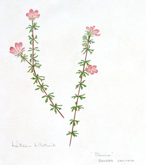
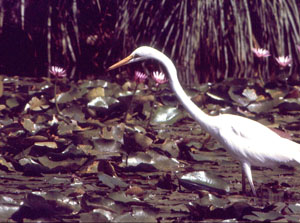

- Lunch Hour Theatre
- The story...
- Ferdinand Bauer
- The old woman of the sea
- Invited to schools
A unique development from Kathleen McArthur’s interests was Lunch Hour Theatre, an idea jelled with her sister Judy Nelson-Gracie following a visit to a Canberra Festival Performance in 1975.
For over twenty years performances were held in Caloundra on the third Thursday of the month, with a two-month midsummer break. This impressive body of work amounts to more than two hundred scripts, often about the local area, and with a strong link to Australian history and culture. Kathleen carefully researched the information and accompanying songs with a small band of willing helpers who participated in performances.
From scripts about Caloundra to scientists in nineteenth century Australia Kathleen used the theatre to broaden community knowledge in many diverse areas. One subject was Ferdinand Bauer, considered by Kathleen the finest botanical artist of all time. His paintings of Australian wildflowers were developed while accompanying Matthew Flinders on the 1802 circumnavigation of Australia, and later in London. Few of Bauer’s paintings were ever published, and being allowed to see some of the originals was a memorable highlight on a visit Kathleen made to England in the 1960s.
Lunch Hour Theatre scripts by Kathleen McArthur are currently in the Sunshine Coast Libraries Heritage Collection at Kawana Library.
Reproduced with permission of Hugh McArthur; courtesy of Caloundra City Libraries
© WPSQ, Sunshine Coast & Hinterland Inc
Lunch Hour Theatre Script The Story of Caloundra’s Lunch Hour Theatre, July 1991
The Story of Caloundra’s Lunch Hour Theatre, July 1991, p 1
But first things first, so to tell it as it happened in 1975, Judy and I were in Canberra that year for the first Canberra Festival where we went to, you might have guessed it, a LHT in the intimate Gallery Theatre. It calls for intimacy. It was quite delightful––just three people reading stories from Australian literature, interspersed with a few songs. It occurred to us both at almost the same moment that we could do something of the sort here in the Gilbert Hall of the CCSA on a Thursday after the Thursday People’s painting session, as an extension of the CCSA library where I was the Thursday Librarian.
So I took up the pen and wrote ‘WE KNOW WHERE WE’VE BEEN BUT WHERE ARE WE GOING?’: a long title for its theme of local history, seeing it as a once-only effort, an experiment, that took over and carried on in full command, taking us off the stage, out of costume, into presentations once a month on the THIRD THURSDAY, with a two-month midsummer break––just as you know it now. We didn’t plan it––it just happened and we have all gone along with it, all of us together––it is OUR OWN SHOW.
Reproduced with permission of Hugh McArthur; courtesy of Caloundra City Libraries
© WPSQ, Sunshine Coast & Hinterland Inc
FERDINAND BAUER
[Extracts from a Lunch Hour Theatre script, and a Talk with photographic slides]
Lunch Hour Theatre Script Ferdinand Bauer, no date
Ferdinand Bauer, [n.d.], pp 1, 2
In the first years of colonisation of Australia the Europeans were diligently sending collectors out to what was then known as New Holland, to gather up the strange and the beautiful for shipping back to their world of budding scientists to ponder over and then be stored in their museums. Ships sailed away laden with the exotica of the South Seas, while the colonists were yearning for the scent of roses and the songs of blackbird and thrush.
As time delivered more settlers there were less and less of the country’s curiosities lying about, and from there possibly grew the myth that our flowers had no scent and our birds no song.
Meantime in the overseas museums the scientists of the emerging scientific world were appraising the findings, labelling them, then storing all in boxes in the cupboards of the museums while we the people of Australia knew nothing of these stolen treasures...
It may seem funny now at the end of the second century of overseas migrants that until recently it was accepted as fact that wildlife lived in that big continent called Africa, and shame on us Queenslanders, we, not having been educated in botany, knew there were no wildflowers in our State because everyone went to Western Australia for wildflower tours. So imbued was that on their minds they simply could not see the flowers by the wayside. What was seen along the roadside was rubbish. We had it wrong. Flowers grew in garden beds or in fields as understood by our Northern Hemisphere migrants; our coastal wallum wildflower plains could not compare with Tulip Beds and Rose Gardens. The scent in the air now is distinctly a floral aroma, which combined with an authorative ‘strategic plan’ will bring us into the real world.
If we are to at least acknowledge the distinction of Australian flowers, let us set the very highest standards, and who could provide those better then the painters of our botanical blooms chosen from the collections of Franz and Ferdinand Bauer. Franz was employed by Sir Joseph Banks to work at Kew. Ferdinand was an accomplished artist while still in his teens, spending years in Eastern Europe illustrating the flora and fauna for the majestic Flora Graeca. When he was chosen by Banks [in 1801] to accompany Robert Brown, botanist, in the Investigator under the command of Mathew Flinders, he was 13 to 14 years older than his fellows.
[In 1802 Matthew Flinders’ expedition circumnavigated and mapped Australia]
… The plants from Brown’s collection and Bauer’s sketches had originally been left at the home of Sir Joseph Banks, but Bauer soon removed his sketches to his own home in order to continue working on them, reproducing about 300 magnificent watercolours, each a complete masterpiece. The colour code, using up to four figures, which he devised, allowed him to reproduce the finest nuances of colour with absolute accuracy so that Banks marvelled: ‘It is beyond what, I confess, I thought possible to perform’.
[Ultimately very few of Bauer’s magnificent Australian paintings were published and most remained stored away in boxes in the Natural History Museum in London]
Ferdinand Bauer, [n.d.], pp 8, 9
How best should we use this treasure that is ours through Ferdinand Bauer’s lifetime of dedicated skills? Water-colours fade in open light as purple irises do in our wallum,  and as the Sun Orchids in a cold-wind change. They need an entirely new vision arrived through understanding. They need to be loved. We need the vision we have lost through packaging everything. How do we change dollars to scents?
and as the Sun Orchids in a cold-wind change. They need an entirely new vision arrived through understanding. They need to be loved. We need the vision we have lost through packaging everything. How do we change dollars to scents?
The Australian Flower Paintings of Ferdinand Bauer published by the Basilisk Press, although when housed most thoroughly in Solander boxes, but without airconditioning, do not escape the spotting on the white paper caused by the humid climate.
The only solution may be that Ferdinand be kept locked up for his own sake until the problem is solved. Meanwhile do not stop drawing in colour or black and white in case some treasure of nature is missed.
[In Living on the Coast Kathleen expresses her joy at seeing an advertisement in 1976 for a limited edition publication of twenty-five of Ferdinand Bauer’s Australian paintings: ‘I recognized at once that it was there just for me’. Kathleen went on to buy this special 1976 publication, The Australian Flower Paintings of Ferdinand Bauer by William T. Stearn, which has now been donated to the Queensland Herbarium.]
[In one of her talks—undated notes to accompany slide photographs, presented during the 1960s and 70s as educational shows for the public, school students and WPSQ members—Kathleen continued the theme of Ferdinand Bauer from her personal perspective:]
Bauera capitata—Call it Bauera for it needs no other name. It was named after one or both of the brothers Bauer, Germans who turned out to be probably the finest botanical artists of all time. I consider them so, from what I have seen. Francis B. spent all his time painting at Kew Gardens while Ferdinand travelled widely. Ferdinand came to Australia with Matthew Flinders and was with him when he circumnavigated Australia, so he has painted many of our flowers. I saw his Australian collection in the Botany Library of The Natural History Museum in London and I will remember the excitement to my dying day, even if I never see them again (and this I would love). They are all packed away in boxes and locked up in cabinets, but I was fortunate to be recommended by the director of Australian plants at the Kew Gardens and thus allowed to go through them on several visits. The work was so fine my eyes could not appreciate the detail so I asked if there was a magnifying glass and got one. Even under strong magnification the detail was perfect, so perfect it was hard to credit that human eyes and craftsmanship could execute it. Yet although all detail was there the composition at all times made a good picture. The world has seen very few of Ferdinand Bauer’s paintings because only fifteen of them were published. Sitting there in London they have survived the bombings of two wars. They should be photographed for inclusion in collections in Australia. We should know this work for it is a precious part of our cultural heritage. Working at Kew at the time was an Australian artist—one of the best living botanical artists—Margaret Stones is her name. She told me that when she first went to London she gloated over the work of the Bauers for months to learn all she could from them. There is a lot more could be said on this subject, but…Reproduced with permission of Hugh McArthur; courtesy of Caloundra City Libraries
© WPSQ, Sunshine Coast & Hinterland Inc
Lunch Hour Theatre Script The Old Woman of the Sea, July 1982
The Old Woman of the Sea, July 1982, pp 1, 2, 3, 4
The old woman of the sea is disturbed. This old salt has lived by the sea for so long her skin is like tanned wobbegong and her eyes have faded to the paleness of a summer sky. You’d recognise her anywhere…The old woman is shocked by her fellow beings’ bad manners towards their noble benefic (sic) the sea. The sea, the mother of us all! To her it is incestuous rape, a term if she used publicly would brand her immediately as ‘emotional’, a current social stigmatism to be avoided at all costs. Nevertheless, it is no less than that.
Years ago Rachel Carson taught her that ‘true understanding demands intuitive comprehension of the whole life of the creature that once inhabited this empty shell’. So when her eyes focus on the sea, the eyes of her mind see into the water with its teaming wildlife, much of which she is familiar with through their skeletons on the sands.
Fish as wildlife? Isn’t that carrying the conservation ‘thing’ to extremes? Many would see it so, for the concept of fish as wildlife has not yet arrived, not even for the glamorous big fish like the Black and the Blue Marlin, but bream, flathead, whiting, John Dory, mullet, prawns, Mangrove Jack, Gar––wildlife? The idea is going to take some getting used to. Little fish? Fair go!
Let’s have our first ‘whatabout’. Whatabout Penilia the water flea––it is important too, for it is used by biologists in monitoring the water environment for change. We acknowledge the work of the Argentine ant, the wood-boring beetles and the sluggish termite in destroying buildings, so too must the small creatures under the sea play a major role although we are not there to see for ourselves. The idea is going to take some getting used to, but it helps to think of the role of a bee and how important it is to man.
It is different with whales, dolphins and dugongs; those large mammals of the sea are fashionable causes taken up by the international elite. But because fashions are based on appearances, for something to be fashionable it has to be seen. Just how could you get on to the television screen the idea of the denial of sea-rights to little fish? How could the old woman of the sea get her message out to the world before it was too late. It was unthinkable that her sea should be turned into a marine desert…
…Were the cause that people were asked to support to embody the sea on the French Riviera or Acapulco or Tahiti where the rich and the famous play in full view of the world’s television cameras and the glossy magazines’ reporters, it might be accepted as normal, for who cares about your little backwater or our little waterway, the Pumicestone Passage? How are people to be convinced they own a magical world before it is lost to them forever––those very people who cannot appreciate a treasure while they have it because it costs them nothing. There is the first problem to be solved: to take a local estuary and make it a fashionable cause…
…How to make the cause of the sea fashionable seemed an unanswerable question that had to be broken down to reality by prefixing it with ‘how to try’. The usual way was to form a committee and elect office bearers and have long talking sessions called meetings, but the very thought of it was anathema to her and she shuddered. Whatever was needed had to come just from her through the power of the individual and the only answer to come through from that, was a book. She could write a book, but that posed two questions––how to have it published and how to get people to read it and the answer to those came bright and clear, fill it with pictures, pictures on every page so the person holding the book would keep turning to see what was drawn on the next page and then the next and if there were not too many words they might read some of those too…
Reproduced with permission of Hugh McArthur; courtesy of Caloundra City Libraries
© WPSQ, Sunshine Coast & Hinterland Inc
Lunch Hour Theatre Script The Halo Presses Down, August 1993
The Halo Presses Down, August 1993, pp 5, 6
It is not to volunteer, but to be invited to schools to talk to children about nature––the animals, particularly birds, and the trees and wildflowers, and to get that invitation there has to be, first, a class with a teacher who has enthusiasm for the subject and a headmaster who can disregard the set curriculum for one day of the year. To some headmasters if it is not in the curriculum it is a waster [sic] of time.
Next best [is] going for a walk with the class; getting them out of the school room releases their mental energies. Failing the field atmosphere, coloured slides do a good job, for, after all, children are at home with visual learning having been born to television.
Kenilworth, with its mixture of farming and forestry, proved to have more knowledge of their bird life than their counterparts in the bigger centres on the coast, the only problem being the names they used for each was solely their own. For instance, they had never heard of an egret––to them it was a White Crane, arrived at through the White-faced Heron which for generations past country people have called the Blue Crane––the same in size and shape, both being herons, only the egret is white. They were not particularly interested to hear that the only crane they were likely to see would be a Brolga, because a Brolga to them was a Native Companion. If birds were ever to be made an examination subject, there was a whole new language of words they would have to learn. If there had been a picture of the Channel-billed Cuckoo, not in this collection, they would know it at once as the Storm Bird, being the noisiest of creatures predicting the summer thunder storms. A lesson with an outsider was not wasted as a lesson in communication, and the under-tens are good company.
The children in the bigger schools of the coast and railway towns were different. They knew the black and white birds that live with people––Magpie, Peewee, Black-faced Cuckoo-shrike, Willy Wagtail, and the ‘biguns’ like Pelican and Swan and Crow. Like their parents’ generation the wide range of waders was lumped together as Snipe.
In schools it was much the same with the wildflowers. Boronia was a name that was useful, covering a wide variety with an attached colour prefix, so there was Red Boronia, Pink Boronia, White Boronia and Yellow Boronia. Simply, the word ‘boronia’ stood for Wallum Wildflowers.
Reproduced with permission of Hugh McArthur; courtesy of Caloundra City Libraries
© WPSQ, Sunshine Coast & Hinterland Inc